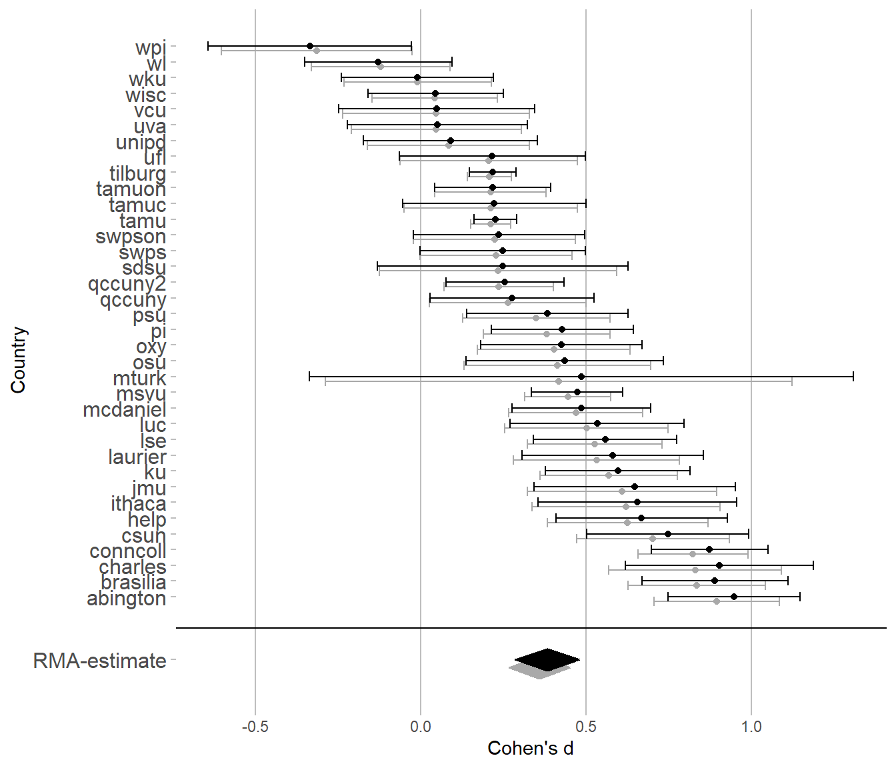

Manuscript
Liability or reliability? Exploring the role of effect size attenuation on meta-analytic heterogeneity
Large-scale collaborative replication efforts have sparked discussions surrounding the replicability of psychological phenomena. For attempts to estimate a phenomenon’s replicability or to predict whether a future replication will replicate successfully, heterogeneity is a crucial parameter that needs to be assessed (Stanley, Carter, & Doucouliagos, 2018). In the meta-analytic context, heterogeneity describes the variation of effect sizes, free of sampling error (DerSimonian & Laird, 1986; Higgins & Thompson, 2002; Riley, Higgins, & Deeks, 2011). Therefore, the presence of heterogeneity can imply that some replications of a single phenomenon may be successful, while others are not. If heterogeneity increases, meaning the phenomenon’s effect size varies more strongly for unexplained reasons, the probability of observing an effect size around zero or even in the negative space grows larger as well (Kenny & Judd, 2019). If we know the mean size and heterogeneity of a phenomenon’s effect, we would theoretically be able to establish an expected replication rate (e.g. Vu, 2024).
Similarly, it has been argued that heterogeneity in effect sizes is an indicator of the theory’s “completeness” surrounding the phenomenon. Linden and Hönekopp argue that “low (as opposed to high) heterogeneity reflects a more advanced understanding of the subject matter being studied” (2021, p. 2). Similarly, von Hippel and Schuetze (2023) argue that heterogeneity in effects is an indicator of a vague, poorly specified theory.
Large-scale attempts of direct replications, using identical protocols, such as the Many Labs studies or Registered Replication Reports (Eerland et al., 2016; e.g. Klein et al., 2014), for the first time allow researchers to estimate heterogeneity undistorted by selection processes like publication bias. In re-analyses of these studies, Olsson-Collentine et al. (2020) identify a positive correlation between a phenomenon’s effect size and its heterogeneity. Similarly, van Erp et al. (2017) and Stanley et al. (2018) estimate strong degrees of heterogeneity across conceptual replications in Psychology. In a separate re-analysis of large scale direct replications, Renkewitz et al. (in preparation) identify substantial heterogeneity in almost all projects where a non-zero effect could be identified. This aligns with the correlation found by Olsson-Collentine et al. (2020).
One source for this heterogeneity, which is not a typical moderator tied to a specific theory, might be impairments in score reliability which vary in their extent across replications. [This is an argument put forward repeatedly by original researchers and replicators alike (do we actually know of any?).] Hunter and Schmidt (2004) and Wiernik and Dahlke (2020), discussing the role of score reliability for standardized effect sizes, claim that differences in score reliability should inflate, and therefore increase, heterogeneity. This implies that standard corrections for imperfect score reliability, such as attenuation correction procedures, should remove that inflation, reducing heterogeneity in corrected effect sizes. Over the following pages, we assess whether score reliability can in fact be made responsible for heterogeneity identified across phenomena. We find no empirical evidence for the argument that correcting for differences in score reliability reduces effect size heterogeneity. Instead, to our great surprise, we find that heterogeneity might as well be larger after the correction procedure. Therefore, theoretical analyses regarding the relationship between score reliability and heterogeneity need to be false. In the second half of this text we make use of analytical arguments to identify the necessary conditions under which an attenuation correction inevitably leads to an increase in effect size heterogeneity.
Effect sizes and score reliability in meta-analysis
In both the initial reports of large scale replication attempts, as well as the re-analyses by Olsson-Collentine et al. (2020), standardized effect sizes (from here-on abbreviated as ES) such as Cohen’s d or Hedge’s g were used. For the remainder of the article, Cohen’s d, defined in Equation 1, will be used as an exemplary estimate of ES, as it is used across a wide range of contexts and well understood by a broad audience.
\[d = \frac{MD}{\sigma_X} \tag{1}\]
Here, MD refers to the mean difference between two groups of interest, while \(\sigma_X\) is the total pooled standard deviation. Since \(d\) constitutes an observed effect size it is affected by sampling error. In terms of heterogeneity, we are not interested in the variance of \(d\), but the variance of the true, underlying ES \(\delta\). In a random-effects meta-analytic model, we can use the standard error and an estimate of heterogeneity to understand how far off the individual observed \(d\) is from the true \(\delta\) in a weighting procedure (Borenstein, Hedges, Higgins, & Rothstein, 2009) The standard error of Cohen’s \(d\) is computed as defined in Equation 2.
\[SE_d=\sqrt{\frac{n_1+n_2}{n_1n_2}+\frac{d^2}{2\left(n_1+n_2\right)}} \tag{2}\]
As is widely known, score reliability affects ES (e.g. Hunter & Schmidt, 2004; Wiernik & Dahlke, 2020). In the context of classical test theory (CTT) score reliability \(\rho_{XX’}\) is defined as the ratio of true to total score variance (Lord & Novick, 2008/1986), as defined in Equation 3.
\[\rho_{XX’} = \frac{\sigma^2_T}{\sigma^2_X}=\frac{\sigma^2_T}{\sigma^2_T + \sigma^2_E} \tag{3}\]
In this equation \(\sigma_T^2\) refers to the true score variance in the sense of CTT, meaning the actual variance of the variable, undistorted by random measurement error. In the same sense, \(\sigma_X^2\) refers to the total variance of scores, including both the true variance and the random error variance \(\sigma_E^2\). This implies that, if true score variance is assumed to be constant across replications, a lower score reliability can only occur due to a larger error score variance. Total score variance would also be larger, therein leading to a smaller ES, as opposed to a similar data-set where a higher score reliability is achieved through a smaller error score variance. However, score reliability is an aspect of a measuring instrument applied to a population (Lord & Novick, 2008/1986; Vacha-Haase, 1998). In the meta-analytic context, as studies tend to be replicated in a variety of populations, neither true nor error score variance can be expected to always be identical across replications. This most likely leads to heterogeneity in score reliability, which, as discussed, is bound to affect ES heterogeneity as well.
Previous discussions of heterogeneity in score reliability have exclusively discussed it as a parameter that inflates heterogeneity in ES, implying that, if score reliability was perfect across all replications, the actual heterogeneity would have been lower. In their discussion, Wiernik and Dahlke claim that „Measurement error variance will impact the results of meta-analyses in three ways: by (a) biasing the mean effect size toward zero, (b) inflating effect-size heterogeneity and confounding moderator effects, and (c) confounding publication-bias and sensitivity analyses” (p. 3, 2020). Additionally, more clearly, they state that “If the studies included in a meta-analysis differ in their measures’ reliabilities, heterogeneity estimates will be artifactually inflated, erroneously suggesting larger potential moderator effects” (p. 4, 2020). They base their claims largely on work done by Hunter and Schmidt (2004), who claim that “Variation in reliability across studies causes variation in the observed effect sizes above and beyond that produced by sampling error.” (p. 302). Overall, both references imply that differences in score (un)reliability inevitably lead to an inflated heterogeneity in ES.
As both sources Hunter and Schmidt (2004) and Wiernik and Dahlke (2020) will be referred to repeatedly, we abbreviate these references as H&S and W&D respectively.
Attenuation correction
If information concerning score reliability is available, it is possible to correct the individual ES for its unreliability. This process is also known as attenuation correction and, while not without its criticisms (Muchinsky, 1996; Schennach, 2016; Schmidt & Hunter, 1996), is a widespread practice in Psychology (reference). Equation 4 describes a simple attenuation correction procedure.
\[d_c = \frac{d}{\sqrt{\hat{\rho}_{xx’}}} \tag{4}\]
Here, \(d_c\) describes the attenuation-corrected estimate of \(d\), which is corrected by dividing it by the estimate of score reliability \(\hat{\rho}_{xx’}\). As described in W&D or Lord & Novick (2008/1986), this is essentially the same, as if the corrected estimate of \(d_c\) was constructed using an estimate of true score standard deviation, as in Equation 5.
\[d_c = \frac{MD}{\hat{\sigma}_{T}}=\frac{MD}{\sqrt{\hat{\rho}_{xx’} \hat{\sigma}_X^2}} \tag{5}\]
\(\hat{\sigma}_T\) can be estimated by simply rearranging the terms from Equation 3. Thereby, an estimate of ES is generated, under the premise that score reliability would have been perfect (\(\rho_{xx'} = 1\)). As the corrected estimate of Cohen’s \(d\) is larger and requires an additional unknown parameter, an estimate of score reliability, the larger uncertainty in this parameter should be reflected in a larger standard error. The standard error for \(d_c\) is defined in Equation 6.
\[SE_{d_c} = \sqrt{SE^2_d \frac{d_c}{d}} \tag{6}\]
The claims made in W&D imply that corrections of individual observed ESs for their unreliability should lead to lower estimates of heterogeneity in meta-analyses of corrected ES. If heterogeneity in score reliability adds to ES heterogeneity, attenuation correction procedures should eliminate that additional variation, as all corrected ES come with identical (perfect) score reliability.
Re-analyses of the collaborative multi-site replication efforts have uncovered differences in score reliability across replications of the same phenomena (Shaw, Cloos, Luong, Elbaz, & Flake, 2020). The claims made in W&D and H&S imply that the ES heterogeneity uncovered in these projects therefore could potentially be explained by these differences in score reliability. Similarly, attempting to explain the substantial extent of ES heterogeneity identified in psychological phenomena, both the original authors as well as the multi-site replication authors claim that differences in score reliability might be responsible (again, do we actually know of any?).
Therefore, we assess the extent to which this intuition is supported by empirical evidence in the following section. The re-analysis of archival data serves to shed light on the following research question:
- To what extent can heterogeneity in standardized effect sizes be explained by means of an attenuation correction?
Re-analysis of archival data
We have collected a large number of openly available multi-site direct replications on psychological phenomena (Fuenderich, Beinhauer, Frank, Heene, & Renkewitz, 2024). The data-sets of about 50 phenomena, largely stemming from the efforts of the Many Labs studies, Registered Replication Reports or the Psychological Science Accelerator, are made openly available in a standardised format at [https://osf.io/7p8rk/], the DRIPHT repository.
Data
The ManyLabs projects were collaborative efforts to replicate several psychological phenomena across different research sites, employing identical protocols. From five published projects, the data for the first three and the fifth Many Labs projects (Ebersole et al., 2016, 2020; Klein et al., 2014, 2018) was harmonized and publicly stored in a standardized format when the DRIPHT repository was set up (Fuenderich et al., 2024). The Registered Replication Reports are similar collaborative efforts, with the sole distinction that for each report a single phenomenon was replicated several times. The Registered Reports 3-10 were added to the DRIPHT repository, as they employed experimental designs with at least two groups (Bouwmeester et al., 2017; Cheung et al., 2016; Eerland et al., 2016; Hagger et al., 2016; McCarthy et al., 2018; O’DONNEL et al., 2018; Verschuere et al., 2018; Wagenmakers et al., 2016). Lastly, some projects from the Psychological Science Accelerator were added to the DRIPHT repository, namely PSA006, PSACR001, PSACR002 and PSACR003 (Bago et al., 2022; Collaboration et al., 2022; Ke Wang, 2021; Wang, Alves, Lins, Pinto, et al., 2022). In contrast to Many Labs or Registered Replication Projects, these collaborative efforts, while also distributed across the globe, do not formally attempt to perform direct replications, but focus on original research or conceptual replications. However, as each project used the same protocol and participants are distributed across different countries, a data structure similar to that of a multi-site replication study emerges. What makes all these collaborative efforts valuable for this manuscript is the fact that all phenomena collected in the DRIPHT-repository are making use of two-group designs and are therefore easily assessed using standardised mean differences.
While replication data on a decent number of psychological phenomena is available in the DRIPHT-repository, to demonstrate how incorporating score reliability affects heterogeneity in ES, selected phenomena need to fulfil three conditions: (1) As we focus on the use of ES \(d\), the phenomenon needs to be assessed using a group design consisting of at least two groups. (2) Score reliability estimates can be derived, this implies that the phenomenon needs to be measured using either several indicators forming a single scale or by repeatedly measuring across several timepoints. (3) Score reliability can only attenuate effect sizes that are not zero in the first place. Therefore, we focus on phenomena where meta-analytic mean ES can be statistically distinguished from zero. While the first criterion is fulfilled by all phenomena found in the DRIPHT repository, the second and third criteria still need evaluation.
As all phenomena in the collection fulfil the first condition, 50 phenomena have been catalogued where the effect is studied by comparing the outcome across two separate groups. From the collection of 50 phenomena, 21 fulfil the second condition, so that estimates of score reliability can be derived. For the 21 phenomena, the dependent variable used to construct the effect size is measured by employing more than a single indicator. The number of indicators per scale varied between 3 and 30. The majority of scales was made up of 3 to 6 items. At the same time, however, this implies that the remaining 29 phenomena did not make use of more than a single indicator to measure the dependent variable. Therefore, for the majority of phenomena it is not possible to assess in how far measurement quality is sufficiently high in terms of e.g. internal consistency or low random error variance.
From the 21 phenomena that employed more than a single indicator, 19 made use of Likert-style items, where respondents would indicate their agreement to some kind of statement. The scale-length varied from 3 to 10-points. The items measuring the remaining 2 phenomena were coded dichotomously, as responses were right or wrong. While the majority of designs make use of some form of control-treatment manipulation, randomly assigning participants to a condition (19 phenomena), some phenomena refer to the effect of pre-existing differences, e.g. biological sex (2 phenomena). Subsequently, those phenomena need to be identified where the meta-analytic mean effect size is statistically significant different from zero. This will be done as a preliminary step in this manuscript’s analysis procedure. Detailed information concerning the different phenomena and how they were measured can be found at [osf-link], while a brief summary can be found in Table 1.
To assess whether ES heterogeneity can be reduced by correcting for score reliability, estimates of meta-analytic heterogeneity are compared across two situations: first, heterogeneity of raw ES, as computed in Equation 1 is assessed. Secondly, ES are corrected for imperfect reliability. Computing the heterogeneity of these corrected ES allows for an assessment, whether the heterogeneity did indeed shrink compared to the first situation, as predicted in W&D and H&S.
Methods
For each replication of a phenomenon, Cohen’s \(d\) is computed as an estimate of raw ES, according to Equation 1, including its standard error (Equation 2). Subsequently, a random-effects meta-analysis is performed using metafor version 4.8-0 (Viechtbauer, 2010). To estimate meta-analytic mean ES and heterogeneity we make use of the REML-estimator, as that estimator tends to perform best across a range of conditions (Hönekopp & Linden, 2022). To identify which phenomena pass criterion (3), using a Wald-type significance test we assess for which phenomenon the meta-analytic mean ES is significantly different from zero. For this hypothesis test, as all other hypothesis tests in this manuscript, we employ a one-tailed significance level of .05.
Additionally, estimates of score reliability are derived. While not without criticism (references), Cronbach’s Alpha is used to estimate score reliability. It is often noted that tau-equivalence is an unrealistic assumption to hold against real-world data, implying that other estimates of score reliability, such as McDonald’s Omega (McDonald, 1999), Guttman’s Lambda 2 or 4 (Guttman, 1945), or the Greatest Lower Bound (Ten Berge & Sočan, 2004) might be better suited. However, all scales employed in this project are scored by computing the simple mean or sum of responses across items for each individual. Computing the mean or sum of several items implicitly assumes tau-equivalence, as each item contributes equally to the individual’s test score. Therefore, Cronbach’s Alpha is the better choice to estimate score reliability, as it avoids a mismatch in assumptions between how the score is computed and how score reliability is estimated. The individual estimates of Cohen’s d are corrected using these estimates of Cronbach’s Alpha, according to Equation 4, including the corrected standard errors (Equation 6). Thereby, estimates of ES are computed, which are corrected for imperfect reliability. Again, a random-effects meta-analysis is run using metafor, generating an estimate of heterogeneity in corrected ES. Different indicators of heterogeneity are readily available, such as \(I^2\), \(H^2\) or the coefficient of variation \(CV\)(Borenstein et al., 2009; Higgins & Thompson, 2002). However, the descriptions found in H&S and W&D discuss the absolute amount of heterogeneity in terms of variance (\(\tau^2\)) or standard deviation (\(\tau\)). These parameters discuss the variability of the standardized ES in the population in terms of variance or standard deviation. Therefore, we also make use of absolute heterogeneity here.
Subsequently, in order to assess whether ES heterogeneity was indeed reduced by the attenuation correction procedure, the estimates of heterogeneity in uncorrected ES and corrected ES are compared. Using Cochran’s Q-test (Cochran, 1954), we assess whether the estimates of heterogeneity are statistically significantly different from 0. Only for those projects where we have sufficient confidence that the individual estimates of heterogeneity are larger than zero can we actually begin to interpret whether there was any change.
To identify whether a reduction in ES heterogeneity is indeed accompanied by differences in score reliability, the estimates of score reliability are assessed meta-analytically as well. To do so, a Reliability Generalization Meta-Analysis is performed (Sánchez-Meca, López-López, & López-Pina, 2013; Vacha-Haase, 1998). This entails that individual estimates of score reliability are adequately transformed using Bonett’s transformation: \(T_{\hat{\rho}} = ln(1 - \hat{\rho})\). This transformation has variance-stabilising properties and therefore allows for adequate inferences concerning heterogeneity in score reliability (Bonett, 2002). Cochran’s Q-test is used to identify statistically significant heterogeneity in transformed score reliability. Estimates derived from a Reliability Generalization Meta-Analysis using these transformations can be back-transformed to the original score reliability scale (Beinhauer, Fünderich, & Renkewitz, 2025):
\[\mu_{\rho{xx'}} \approx 1 - exp(\mu_{T\left[\rho_{XX^\prime}\right]})-\frac{1}{2} exp(\mu_{T\left[\rho_{xx'}\right]})\tau_{T\left[\rho_{XX^\prime}\right]}^2 \tag{7}\]
\[\tau_{\rho_{xx'}}^2 \approx exp(\mu_{T\left[\rho_{xx'}\right]})2 \tau_{T\left[\rho_{xx'}\right]}^2+exp(\mu_{T\left[\rho_{xx'}\right]})^2\tau_{T\left[\rho_{xx'}\right]}^4 \tag{8}\]
We executed these steps for each phenomenon. The statistical programming language R, Version 4.4.2 (R Core Team, 2024) is used for all data manipulation and statistical analysis. Graphics are constructed using the R package ggplot2, version 3.5.1 (Wickham, 2016).
Results
Equations 1, 2, 4, and 6 were used to generate estimates of standardized ES, both uncorrected and corrected, with their corresponding standard errors. Generally, this leads to larger (absolute) ES and larger standard errors after the correction. As an example from the 21 selected phenomena, the results from this procedure on Nosek’s Explicit Art sex differences phenomenon are displayed in the forest plot in Figure 1. Here, grey dots represent the uncorrected ES for each sample, while black dots represent the corrected ES in each sample. The bars surrounding these dots show the respective 95%-Cis.
In Figure 1 it becomes apparent that the reliability attenuation procedure leads to an increase in the individual absolute effect size, as the black dots are moved further away from zero. Simultaneously, the standard errors grew larger after the attenuation correction, which leads to larger 95%-CIs. This is most easily observed for the mturk-sample, which already had a rather large confidence interval to begin with. Additionally, in the diamond at the bottom of the figure, we can see that the meta-analytic estimate mean ES is also larger after the attenuation correction took place. In Table 1, the estimates and tests on the meta-analytic average ES, both corrected and uncorrected, can be found.
Which phenomena pass criterion 3)?
Table 1 demonstrates that what we observed in Figure 1 holds across all 21 phenomena. All meta-analytic effects are larger in their absolute size after applying an attenuation correction procedure. Similarly, the uncertainty quantified in the estimate’s standard error is larger. Additionally, Table 1 highlights which phenomena pass criterion (3)—the effect size must be statistically significantly distinguishable from zero. 12 phenomena pass this criterion, highlighted in boldface. It may be remarked that the attenuation correction procedure, in this data, appears to have no influence on whether a phenomenon passes the criterion. The differences in p-value are rather small and lead to no difference in conclusion, regarding a significance level
| MASC | \(\hat{\mu}_{\delta_0}\) (SE) | p | \(\hat{\mu}_{\delta}\) (SE) | p |
|---|---|---|---|---|
| Albarracin_Priming_SAT | .158 (.068) | .010 | .210 (.089) | .009 |
| Carter_Flag_Priming | .018 (.029) | .269 | .026 (.036) | .232 |
| Caruso_Currency_Priming | -.019 (.026) | .771 | -.022 (.029) | .770 |
| Dijksterhuis_trivia | .002 (.030) | .478 | -.024 (.040) | .725 |
| Finkel_Exit_Forgiveness | .050 (.049) | .157 | .056 (.056) | .158 |
| Finkel_Neglect_Forgiveness | .051 (.055) | .178 | .059 (.063) | .174 |
| Giessner_Vertical_Position | .026 (.023) | .124 | .027 (.025) | .133 |
| Hart_Criminal_Intentionality | .170 (.078) | .015 | .184 (.085) | .015 |
| Hart_Detailed_Processing | .082 (.058) | .078 | .096 (.067) | .074 |
| Hart_Intention_Attribution | -.011 (.058) | .572 | -.021 (.080) | .603 |
| Husnu_Imagined_Contact | .116 (.032) | <.001 | .129 (.035) | <.001 |
| Nosek_Explicit_Art | .360 (.047) | <.001 | .383 (.050) | <.001 |
| Nosek_Explicit_Math | .401 (.029) | <.001 | .415 (.030) | <.001 |
| PSACR001_anxiety_int | .251 (.022) | <.001 | .263 (.023) | <.001 |
| PSACR001_behav_int | .035 (.020) | .040 | .040 (.023) | .044 |
| PSACR002_neg_photo | .663 (.040) | <.001 | .747 (.047) | <.001 |
| Shnabel_Willingness_Reconcile_Rev | .533 (.101) | <.001 | .582 (.109) | <.001 |
| Shnabel_Willingness_Reconcile_RPP | .585 (.062) | <.001 | .655 (.067) | <.001 |
| Srull_Behaviour_Hostility | .051 (.029) | .040 | .062 (.034) | .035 |
| Srull_Ronald_Hostility | .063 (.029) | .014 | .074 (.033) | .013 |
| Zhong_Desirability_Cleaning | -.031 (.024) | .903 | -.042 (.036) | .880 |
Note: Since in a meta-analysis, we attempt to estimate mean and variance of the parameter’s true distribution, in this table \(\hat{\mu}_{\delta_0}\) represents the meta-analytic estimate of mean uncorrected \(d\) and \(\hat{\mu}_{\delta}\) represents the estimate of the meta-analytic mean of corrected \(d_c\).
Estimates of heterogeneity
Table 2 contains the results from performing an RG-MA on the Cronbach’s Alpha coefficients of the scales used to measure the 12 remaining phenomena. Additionally, it contains estimates of heterogeneity for both uncorrected ES (\(\delta_0\)) and corrected ES (\(\delta\)), which are central to assess the research questions posed in section Attenuation Correction. Most importantly, Table 2 demonstrates that for all but one of the phenomena, the attenuation correction procedure barely has an impact on the extent of ES heterogeneity. However, while the heterogeneity for the Srull_Behaviour_Hostility phenomenon seems reduced by about a third of its initial value, the ES heterogeneity for this phenomenon is rather small to begin with. Using a significance test, we can not distinguish this value confidently from zero. This implies that for the majority of phenomena, differences in score reliability can not be made responsible for heterogeneity in standardized effect sizes.
| MASC | \(\hat{\mu}_{\rho_{XX'}}\) (95%-CI) | \(\hat{\tau}_{\rho_{XX'}}\) | QE (df) | p | \(\hat{\tau}_{\delta_0}\) | QE (df) | p | \(\hat{\tau}_{\delta}\) | QE (df) | p |
|---|---|---|---|---|---|---|---|---|---|---|
| Albarracin_Priming_SAT | 0.585 [0.543:0.623] | 0.000 | 2.899 (7) | .894 | 0.000 | 5.454 (7) | 0.605 | 0.000 | 5.298 (7) | 0.624 |
| Hart_Criminal_Intentionality | 0.849 [0.811:0.879] | 0.054 | 66.17 (11) | <.001 | 0.171 | 18.96 (11) | 0.062 | 0.185 | 18.81 (11) | 0.065 |
| Husnu_Imagined_Contact | 0.814 [0.802:0.825] | 0.023 | 66.389 (35) | .001 | 0.087 | 47.581 (35) | 0.076 | 0.094 | 47.351 (35) | 0.079 |
| Nosek_Explicit_Art | 0.881 [0.869:0.891] | 0.029 | 142.551 (35) | <.001 | 0.178 | 62.771 (35) | 0.003 | 0.190 | 63.074 (35) | 0.003 |
| Nosek_Explicit_Math | 0.936 [0.932:0.939] | 0.007 | 59.43 (35) | .006 | 0.000 | 39.169 (35) | 0.288 | 0.000 | 39.107 (35) | 0.29 |
| PSACR001_anxiety_int | 0.903 [0.89:0.914] | 0.041 | 494.822 (48) | <.001 | 0.085 | 74.655 (48) | 0.008 | 0.088 | 74.251 (48) | 0.009 |
| PSACR001_behav_int | 0.693 [0.651:0.73] | 0.140 | 853.138 (48) | <.001 | 0.068 | 65.204 (48) | 0.05 | 0.077 | 65.253 (48) | 0.049 |
| PSACR002_neg_photo | 0.791 [0.774:0.806] | 0.047 | 350.852 (36) | <.001 | 0.220 | 219.709 (36) | <.001 | 0.260 | 237.115 (36) | <.001 |
| Shnabel_Willingness_Reconcile_Rev | 0.832 [0.818:0.845] | 0.000 | 5.053 (7) | .653 | 0.233 | 23.367 (7) | 0.001 | 0.253 | 23.182 (7) | 0.002 |
| Shnabel_Willingness_Reconcile_RPP | 0.768 [0.737:0.796] | 0.032 | 17.535 (7) | .014 | 0.073 | 8.472 (7) | 0.293 | 0.071 | 8.244 (7) | 0.312 |
| Srull_Behaviour_Hostility | 0.629 [0.59:0.665] | 0.082 | 123.49 (21) | <.001 | 0.054 | 24.493 (21) | 0.27 | 0.034 | 24.677 (21) | 0.261 |
| Srull_Ronald_Hostility | 0.739 [0.716:0.76] | 0.047 | 91.722 (21) | <.001 | 0.046 | 24.756 (21) | 0.258 | 0.053 | 24.593 (21) | 0.265 |
Note: \(\hat{\mu}_{\rho_{XX'}}\) is the back-transformed meta-analytic estimate of mean score reliability; \(\tau{\mu}_{\rho_{XX'}}\) is the back-transformed estimate of heterogeneity in score reliability; Note that, since in a meta-analysis, we attempt to estimate mean and variance of the parameter’s true distribution, in this table \(\hat{\tau}_{\delta_0}\) represents the estimate of heterogeneity in uncorrected \(d\); accordingly, \(\hat{\tau}_{\delta}\) represents the estimate of the heterogeneity in corrected \(d_c\).
Secondly, in Table 2 we find that for ten out of twelve phenomena, ES heterogeneity grows as a result from the attenuation correction procedure. Even though these differences tend to be small, it is clear that in all those cases, not only did accounting for score reliability not explain any ES heterogeneity, we find even more than initially expected. This is incompatible with claims made in W&D and H&S, the attenuation correction increased ES heterogeneity. Concerning the remaining two phenomena, for the Shnabel_Willingness_Reconcile_RPP, the reduction in heterogeneity is miniscule and the estimate of heterogeneity is not statistically significant in the first place. Most likely, the difference in ES heterogeneity estimates can be explained by issues of estimation, as only eight replications are available. Similarly, only for the Srull_Behaviour_Hostility phenomenon, we find a substantial reduction in heterogeneity due to the attenuation correction procedure. The estimates of ES heterogeneity are not statistically significant, however, which hampers our ability to meaningfully interpret and compare these estimates. For the majority of phenomena it appears that differences in score reliability do not inflate heterogeneity in uncorrected effect sizes. Instead these differences mask ES heterogeneity, that can be unveiled by accounting for score reliability.
Relationship between score reliability and effect sizes in terms of heterogeneity
In the re-analysis of archival data in the previous section we demonstrated that, at least for the multi-site direct replication and PSA-projects, that score reliability does not hold any noteworthy value as a potential moderator explaining ES heterogeneity. Additionally, we demonstrated that claims formulated in W&D and H&S regarding how score reliability increases ES heterogeneity is false. We found a large number of phenomena where, contrary to popular claims, correcting for score reliability increases ES heterogeneity, instead of decreasing it.
This implies that there is an error in the reasoning or intuition behind claims made in H&S and W&D, as our observations can not be explained by the current literature. Over the following paragraphs, we will briefly explore the intuition that might have led to the previous claims. Subsequently, we will use analytical arguments to clarify how score reliability actually affects ES heterogeneity. Therein, we also identify potential conditions under which an attenuation correction can actually reduce ES heterogeneity - and under which it is more likely to increase it.
Intuitive relationship
It might help to think about linear models, when discussing the intuition that might underlie the idea, that controlling for score reliability should reduce ES heterogeneity. Heterogeneity describes unexplained variation in a parameter’s true distribution, that we model using meta-analytical techniques (Borenstein et al., 2009; Higgins & Thompson, 2002). In that way, the idea of heterogeneity is closely related to residual variance, as we observe it in a simple linear model. Both describe variation that could not be explained by the predictive variables in the case of the simple linear model, or not explained by incorporating the Standard Errors in the case of a meta-analytic model.
For the simple linear model, if we add an additional predictor to the model that we know shares variance with the parameter that we aim to predict, this should reduce the amount of residual variance that we observe across most instances. Generally, removing a source of variance by controlling for it, we expect any unexplained variation to shrink. Similarly, we know that differences in score reliability, by definition, are related to differences in standardized effect sizes. Therefore, intuitively, it seems sensible to expect that controlling for differences in score reliability should reduce the unexplained variance in standardized effect sizes, as described in H&S and W&D.
Hunter & Schmidt have additionally derived an equation which demonstrates how heterogeneity in score reliability affects heterogeneity in ESs (2004, p. XX). Equation 9 implies that heterogeneity in \(\delta_0\) is essentially a function in which heterogeneity and mean value of \(\delta\) are weighted by mean score reliability \(\rho_{xx‘}\) and its heterogeneity.
\[\tau^2_{\delta_0} = [\mu_{\rho_{xx‘}}]^2 \tau^2_{\delta} + [\mu_{\delta}]^2 \tau^2_{\rho_{xx‘}} \tag{9}\]
We adjusted Equation 9 using the notation used throughout this text. Here, \(\delta_0\), carrying a 0 in the index, refers to the uncorrected ES, undistorted by sampling error but not corrected for measuring error. On the other hand \(\delta\), no index, refers to the corrected ES, undistorted by sampling error and measurement error. Lastly, \(\rho_{XX'}\) refers to score reliability. Hunter & Schmidt (2004) claim that Equation 9 demonstrates that differences in score reliability inflate ES heterogeneity, which means that an attenuation correction procedure would have to reduce ES heterogeneity. However, it can be easily verified that Equation 9 does not allow for such claims. Depending on both the mean value \(\mu_{\rho_{xx‘}}\) and the heterogeneity \(\tau^2_{\rho_{xx‘}}\) in score reliability, ES heterogeneity might be increased or decreased by the differences in score reliability.
Most likely, Hunter and Schmidt did not fully explore the implications of Equation 9, but followed the general intuition we lined out–“If a source of variation is controlled for, the amount of unexplained variance should be reduced.” Wiernik and Dahlke (2020) refer to the work by Hunter & Schmidt (2020), likely following their intuition.
In the re-analysis of archival data, we have demonstrated that this intuition does not hold for the relationship of ES heterogeneity and score reliability. Instead, we will propose an alternative way that helps us discern, under which conditions we can expect an attenuation correction procedure to lead to an increase in ES heterogeneity.
Describing ES as a random ratio variable
Realising that an ES, as defined in Equation 1, is actually a ratio, allows for a different analytical description of how differences in score reliability can affect ES heterogeneity. If the phenomenon is heterogeneous and score reliability varies across replications, it seems sensible to assume that both numerator and denominator (MD and \(\sigma_X\)) from Equation 1 vary across replications. In that case, the ES can be described as a random variable stemming from a ratio distribution. A ratio distribution is a probability distribution constructed by dividing one random variable by a second random variable: \(Z = \frac{X}{Y}\). First order taylor approximation may be used to generate estimates of mean and variance of the ratio variable [irrespective of distribution?] (Van Kempen & Van Vliet, 1999). Here we use the Taylor-estimator of the ratio’s variance to demonstrate how differences in score reliability may affect heterogeneity in ES.
\[\tau^2[Z] \approx \frac{\tau^2[X]}{\mu[Y]^2} - \frac{2\mu[X]}{\mu[Y]^3} cov[X,Y] + \frac{\mu[X]^2}{\mu[Y]^4} \tau^2[Y] \tag{10}\]
Assuming that the random variables are uncorrelated, simplifies the equation to
\[\tau^2[Z] \approx \frac{\tau^2[X]}{\mu[Y]^2} + \frac{\mu[X]^2}{\mu[Y]^4} \tau^2[Y] \tag{11}\]
Substituting for ES, unstandardized mean difference MD and pooled standard deviation \(\sigma_X\) leads to
\[\tau^2[\delta_0] \approx \frac{\tau^2[MD]}{\mu[\sigma_x]^2} + \frac{\mu[MD]^2}{\mu[\sigma_x]^4} \tau^2[\sigma_x] \tag{12}\]
As stated in Equation 5, correcting ES for score reliability can be described through a correction of the pooled standard deviation: \(\sigma_T = \sqrt{\rho_{xx’} \sigma^2_x}\). Since \(\rho_{xx'}\) is always between zero and one, in the case of imperfect score reliability, \(\sigma_T\) will always be smaller than total \(\sigma_x\).
In Equation 3 we see that total standard deviation \(\sigma_X\) is constructed only from (the square of the sum of) error score variance \(\sigma_E^2\) and true score variance \(\sigma_T^2\). Measurement precision, since this should not pertain the true scores, should only affect the error score variance. Therefore, if the heterogeneity in \(\sigma_X\) was introduced purely by differences in measurement precision, an attenuation correction procedure can remove that heterogeneity. Alternatively, the underlying latent variable may not be distributed identically across replications. In that case, true score variance \(\sigma^2_T\) would vary across replications and induce heterogeneity in \(\sigma_X\). This heterogeneity would lead to differences in standardized differences ES as well, but it can not be removed by means of an attenuation correction procedure.
In that case, some heterogeneity in \(\sigma_T\) would remain, albeit heterogeneity found in \(\sigma_x\) was reduced. Equation 12 essentially demonstrates how mean and heterogeneity of MD, paired with mean and heterogeneity of total score standard deviation \(\sigma_x\) can be used to estimate heterogeneity in raw ES \(\delta_0\). Similarly, we can adjust Equation 12 to describe how, instead of total score standard deviation, mean and variance in true score standard deviation \(\sigma_T\) affect heterogeneity in corrected ES \(\delta\).
\[\tau^2[\delta] \approx \frac{\tau^2[MD]}{\mu[\sigma_T]^2} + \frac{\mu[MD]^2}{\mu[\sigma_T]^4} \tau^2[\sigma_T] \tag{13}\]
The differences between the two Equations 12 and 13 demonstrates how ES heterogeneity is affected by an attenuation correction procedure. According to the quotes in H&S and W&D, Equation 12 should lead to a larger value of \(\tau^2\left[\delta_0\right]\), compared to the estimate of \(\tau^2\left[\delta\right]\) from Equation 13. However, as demonstrated in the re-analysis of archival data, we can already expect that this can not be an implication of these [Equations Equation 12] and 13.
Instead, what is guaranteed is that the expected value of \(\sigma_T\) is smaller than the expected value of \(\sigma_X\). Similarly, the heterogeneity in \(\sigma_T\) is guaranteed to be smaller than the uncorrected heterogeneity in \(\sigma_X\). However, since the expected value of either standard deviation is placed in the denominator of the function and the variance of either is placed in the numerator of the function, Equation 9 is not sufficient to explain how heterogeneity in ES changes due to the attenuation correction.
In this section, we attempt to understand under which circumstances the heterogeneity in ES grows larger as the result of an attenuation correction procedure, contrary to claims made in W&D and H&S. To do so, we propose the following inequality, involving Equations 12 and 13.
\[\tau^2_{\delta} > \tau^2_{\delta_0} \quad \quad \quad \quad \quad \frac{\tau_{MD}^2}{\mu_{\sigma_T}^2} + \frac{\mu_{MD}^2}{\mu_{\sigma_T}^4} \tau^2_{\sigma_T} > \frac{\tau_{MD}^2}{\mu_{\sigma_x}^2} + \frac{\mu_{MD}^2}{\mu_{\sigma_x}^4} \tau^2_{\sigma_x} \tag{14}\]
As long as the inequality defined in Equation 14 holds true, an attenuation correction procedure would lead to larger estimates of ES heterogeneity. Conditions under which Equation 14 does not hold are conditions under which the claims made in W&D and H&S are met. Therefore, this inequality is essentially the opposite of the claims made in W&D and H&S. Unfortunately, the inequality in this form does not convey sufficient information about the conditions under which it can potentially hold. In Appendix A, we rearranged Equation 14, so we end up with a form that we can use to actually derive conditions under which ES heterogeneity can be inflated or deflated by differences in score reliability.
To do so, we introduce two additional metrics.
\[R_1 = \frac{\mu_{\sigma^2_T}}{\mu_{\sigma^2_X}} \tag{15}\]
\(R_1\) describes the relative size of mean true score variance, compared to the mean observed score variance. This informs us, how much of the mean total score variance can be attributed to mean true score variance. Therefore, this metric is close to the average score reliability. Even though formally \(R_1\) and the meta-analytic mean score reliability \(\mu_{\rho_{xx'}}\) do not share not the same value, in practice we observe little to no differences between the two parameters. Large values indicate that correcting the individual score variances (or standard deviations for that matter) using the attenuation correction procedure should lead to very little change in ES, as most of the variation observed were due to genuine differences in true scores. Small values indicate the opposite, the observed score variance was due to a larger amount of random error score variance, leading to a stronger correction.
\[R_2 = \frac{\tau^2_{\sigma^2_T}}{\tau^2_{\sigma^2_X}} \tag{16}\]
The metric \(R_2\) on the other hand describes in how far the attenuation correction procedure has successfully reduced heterogeneity in score variance \(\tau^2_{\sigma^2_X}\). A value of 1 indicates that the heterogeneity in true score variance \(\sigma^2_T\) is essentially just as large as the heterogeneity initially observed. Smaller values indicate how much heterogeneity is “left”, after applying an attenuation correction, relative to the initial heterogeneity. This means that a value of .7 indicates that about 70% of heterogeneity in score variance remains, even after correcting for differences in score reliability. As only 30% of score variance heterogeneity could be removed, this would imply that differences in error score variance \(\sigma^2_E\) were responsible for less than a third of the heterogeneity in score variances found. On the contrary, more than two thirds of heterogeneity could be attributed to actual differences in how the underlying true scores are distributed across samples.
Concerning the re-arranged inequality from Appendix A, we identify one necessary but not sufficient condition or rule described in Equation 17.
\[R_1^3 \leq R_2 \tag{17}\]
With necessary but not sufficient we mean that, as long as Equation 17 holds, an attenuation correction will inevitably increase ES heterogeneity. However, if the inequality does not hold, it is not guaranteed that the attenuation correction can decrease ES heterogeneity. Whether ES heterogeneity can be decreased depends on other parameters, that we left out of this short form, but can be found, accompanied by a more detailed description, in Equation 25.
As long as \(R_1^3\) is smaller or equal compared to \(R_2\), Equation 14 is bound to hold true. This means that as long as the average score reliability, to the power of 3, does not exceed the relative remaining variance heterogeneity after the attenuation correction, Equation 14 is not violated. For example, assuming average score reliability is about .8, the heterogeneity in \(\sigma^2_T\) needs to make up less than 51.2% (\(R_2 \geq .8^3 = .512\)) of the heterogeneity in total score variance \(\sigma^2_X\). At \(R_1 = .8\), as long as \(R_2 \geq .512\), the claims made in W&D and H&S can not hold.
\(R_1\) essentially describes the relative size of mean score variance after the attenuation correction, and \(R_2\) essentially describes the relative size of score variance heterogeneity after the attenuation correction. Therefore, Equation 17 states the following regarding the change in mean value and heterogeneity due to the correction: ES heterogeneity will always be reduced, as long as the remaining heterogeneity in score variance is not substantially smaller than the size of the remaining mean value.
As long as there are substantial differences in the true score variance across administrations, it is unlikely that an attenuation correction can actually produce such a low \(R_2\). Generally speaking, \(R_1\) largely depends on the relative measurement precision. If measurements were made more precisely, average score reliability and \(R_1\) would be higher. On the other hand, \(R_2\) depends on how different the measurement precision was at the individual administrations, but also how different the individual administrations sites are regarding their true score variance. If the administration sites carry large differences in true score variance \(R_2\) is unlikely to be substantially smaller than \(R_1\).
It is important to reiterate that the condition in Equation 17 only describes under which conditions the inequality is guaranteed to hold, no matter what value other parameters like the mean value of \(MD\) or its heterogeneity take on. This means that, if the condition in Equation 17 is violated, it is by no means guaranteed that an attenuation correction procedure would actually reduce heterogeneity in ES. Thereby, inference made from Equation 17 is asymmetrical. While we know, if the inequality holds, heterogeneity in corrected ES will be larger than heterogeneity in uncorrected ES, we can’t be certain that the opposite is true if the inequality does not hold.
Re-analysis of archival data
Table 2 showed that for all phenomena, for which we identified statistically significant ES heterogeneity, the heterogeneity was even larger after the attenuation correction procedure. Here, we will re-analyse the data, estimating \(R_1\) and \(R_2\) for each phenomenon respectively. Therein, we not only show that our claims derived from analytical arguments hold up in empirical assessment, but also demonstrate how the metrics \(R_1\) and \(R_2\) may be used to inform how score reliability affected ES heterogeneity.
Methods
Estimation of \(R_1\) and \(R_2\) requires estimates of meta-analytic mean and heterogeneity of both the total score variance \(\sigma^2_X\) and the true score variance \(\sigma^2_T\). Elsewhere, we proposed the method Boot-Err (ref.) as an alternative method to test for and estimate the differences in error score variance \(\sigma^2_E\). Among other things, in Beinhauer et al. (2025) we deliver detailed instructions on how estimates for mean and heterogeneity of total score variance, and the score variance components can be derived. This means that Boot-Err can be used to generate all estimates required for computation of the metrics \(R_1\) and \(R_2\).
For the following analysis, Boot-Err is used. As Boot-Err makes use of meta-analytic techniques and bootstrap sampling, we perform analyses using the packages metafor, version 4.8-0 (Viechtbauer, 2010), and boot, version 1.3-31 (A. C. Davison & D. V. Hinkley, 1997), in the statistical programming language R, version 4.4.2 (R Core Team, 2024).
Results
Table 3 reports the meta-analytic estimates of observed and true score variances, including their heterogeneity and metrics \(R_1\) and \(R_2\) across all 12 phenomena. In Table 3 we see that for ten out of 12 phenomena, the \(R_2\) metric is larger than the \(R_1\) metric. Additionally, we observe that across eight phenomena, \(R_2\) is larger than .96. This implies that of the heterogeneity observed in score variances, 97% or more could not be explained by differences in random error introduced by the measuring instrument, but by genuine differences in the underlying distribution.
For the two exceptions, those phenomena where the attenuation correction procedure actually led to an decrease in ES heterogeneity (Srull_Behavior_Hostility and Shnabel_Willingness_Reconcile_RPP), the significance test for the ES heterogeneity was not significant, both before and after the correction. The results regarding \(R_2\) indicate that the majority of score variance heterogeneity was due to differences in true score variance \(\sigma^2_T\). Since either the heterogeneity was so small or the sample size so low that the heterogeneity could not be statistically distinguished from zero, we should be cautious in the interpretation of a reduction in that estimate. Most likely, the reduction in heterogeneity is better explained by imprecise estimation than an actual reduction of heterogeneity.
Lastly, for two out of the 12 phenomena, the Albarracin_Priming_SAT and the Shnabel_Willingness_Reconcile_Rev phenomena, we find \(\tau_{\sigma^2_X}\) of 0. Therefore, the \(R_2\) metric could not be computed, as the denominator would have been zero. However, we also did not identify statistically significant ES heterogeneity in the first place. The phenomena were assessed with a particularly low number of replications (8 in both cases). Estimation precision for heterogeneity in variance components, even more so than for ES, largely depends on the sample size. Most likely, the low sample size led to implausible estimates in both true and total score variance heterogeneity and subsequently to an implausible estimate of \(R_2\). Meta-analytic estimates, especially those concerning score variance components such as \(R_2\), therefore should be interpreted with caution, if the sample size was particularly low.
Generally, Table 3 implies that for all measurements concerning these phenomena, the heterogeneity in observed score variances could not be substantially explained by differences in measurement quality. For all phenomena, \(R_2\) was larger than \(R_1\), implying that an attenuation correction procedure could not reduce ES heterogeneity in any of these cases. The results in Table 2 agree with this conclusion, as no phenomena could be identified where statistically significant ES heterogeneity was accompanied by a reduction in differences due to the correction.
| MASC | \(\hat{\mu}_{\sigma^2_X}\) | \(\hat{\mu}_{\sigma^2_T}\) | \(\hat{\tau}_{\sigma^2_X}\) | \(\hat{\tau}_{\sigma^2_T}\) | \(R_1\) | \(R_2\) |
|---|---|---|---|---|---|---|
| Albarracin_Priming_SAT | 0.022 | 0.013 | 0.000 | NA | 0.589 | -Inf |
| Hart_Criminal_Intentionality | 2.194 | 1.865 | 0.757 | 0.746 | 0.850 | 0.970 |
| Husnu_Imagined_Contact | 3.327 | 2.715 | 0.501 | 0.498 | 0.816 | 0.989 |
| Nosek_Explicit_Art | 0.927 | 0.822 | 0.198 | 0.197 | 0.886 | 0.993 |
| Nosek_Explicit_Math | 1.741 | 1.628 | 0.104 | 0.103 | 0.936 | 0.981 |
| PSACR001_anxiety_int | 1.149 | 1.040 | 0.253 | 0.248 | 0.905 | 0.966 |
| PSACR001_behav_int | 0.688 | 0.515 | 0.526 | 0.516 | 0.748 | 0.964 |
| PSACR002_neg_photo | 0.603 | 0.482 | 0.131 | 0.131 | 0.799 | 0.986 |
| Shnabel_Willingness_Reconcile_Rev | 1.051 | 0.874 | 0.000 | NA | 0.832 | -Inf |
| Shnabel_Willingness_Reconcile_RPP | 0.899 | 0.698 | 0.194 | 0.193 | 0.776 | 0.989 |
| Srull_Behaviour_Hostility | 2.727 | 1.736 | 0.405 | 0.361 | 0.637 | 0.795 |
| Srull_Ronald_Hostility | 1.875 | 1.385 | 0.338 | 0.316 | 0.739 | 0.873 |
Discussion
We have examined meta-analytic heterogeneity in standardized mean differences. Since score reliability is often discussed as a source for such heterogeneity, we estimated the heterogeneity before and after correcting for differences in reliability coefficients using an attenuation correction procedure. We found that a) in the majority of cases, the change in ES heterogeneity is small to non-existent. This implies that, across the data-sets we got to examine, differences in score reliability do not serve as an appropriate explanation for ES heterogeneity. We also found that b) in the majority of cases, the direction of change in ES heterogeneity does not align with assumptions formulated in W&D and H&S. In almost all cases (every single case, if we restrict ourself to phenomena where we found statistically significant differences in ES), the attenuation correction led to increased estimates of ES heterogeneity. This means that the claims found in W&D and H&S, implying that an attenuation correction can reduce ES heterogeneity, stem from a general misunderstanding of how score reliability can affect ESs.
Using analytical arguments, we derived a broad rule, outlining under which conditions we can expect an attenuation correction to increase ES heterogeneity. In general, score reliability affects ESs by inflating the score variance, as the (square root of the) score variance is used to standardize the mean difference. The conditions we found depend on how both the mean value and the heterogeneity of score variance are reduced by correcting for imperfect score reliability. We introduced two novel metrics: \(R_1\), describing the fraction of mean true score variance in the mean total score variance, therefore mirroring the average score reliability coefficient, and \(R_2\), describing the fraction of true score variance heterogeneity in the total score variance heterogeneity. We find that, as long as \(R_1^3 < R_2\), an attenuation correction will increase ES heterogeneity.
Since \(R_1\) is carrying the exponent of 3, it implies that the reduction in mean score variance is affecting the ES heterogeneity more strongly than the reduction in score variance heterogeneity. This is best described through an example: We know what an acceptable average score reliability looks like in the area of Psychology. Researchers largely target a score reliability of at least .7, preferably .8. An average score reliability of .7 implies that 70% of the variance observed in scores can actually be attributed to true underlying differences. From our derived rule, we know that, as long as \(R_2\) is larger or equal to \(.7^3 = .343\), the attenuation correction procedure can only increase ES heterogeneity. If we want to explain ES heterogeneity through score reliability, even though only 30% of the variance observed in score can be attributed to random measurement error, at least 65.7%, almost two thirds, of the heterogeneity in score variance would need to be attributable to differences in the error score variance. In other words, at most 34.3% of heterogeneity in score variances may be due to actual differences in how the latent variable is distributed (in terms of spread) across the administration sites.
In the examples we re-analysed throughout this text, as well as the majority of research studies done in the behavioural sciences (Bornstein, Jager, & Putnick, 2013; Hultsch, MacDonald, Hunter, Maitland, & Dixon, 2002), no proper sampling techniques are employed. Most samples where these instruments are applied come to be through convenience sampling, where students self-select into studies. Without a valid sampling scheme, we essentially have have no basis to assume anything about the true score variance (Hultsch et al., 2002). Most importantly, however, we have no reason to assume that the true score variance could potentially be homogeneous or stable across administration sites. Instead, it is very likely that the convenience sampling procedures produce samples that vary extremely strongly in how they are put together, leading to large degrees of true score variance heterogeneity. At the same time, score reliability is a low-hanging fruit to optimise as most researchers are aware and trained in assessing score reliability (Hussey, Alsalti, Bosco, Elson, & Arslan, 2025).
The combination of these aspects can explain what we observed throughout this text: Reliability coefficients are in an acceptable range, leading to a small, but constant reduction in mean score variance if we apply an attenuation correction. At the same time, there is substantial variation in true score variance, implying that most of the score variance heterogeneity can not be attributed to differences in error score variance. Since only differences in error score variance can be corrected for, the attenuation correction has a very small effect on heterogeneity estimates in score variance. Therefore, as indicated by our inequality, an attenuation correction is likely to have very little impact on ES heterogeneity. If anything, it most likely increases it. This also means that, in such settings, score reliability does not serve as a moderator explaining ES heterogeneity.
If we, in the field of Psychology and other social or behavioural sciences, keep making use of convenience samples simply because they are so convenient, we can not expect anything to change. Most likely, ES heterogeneity will remain a substantial factor hampering the interpretability of original and replication studies. Instead, we should focus our data collection efforts on the generation of samples, where we know that the variance in the sample means something. This is most easily achieved by proper sampling techniques, which ensure that the sample is representative for some population. In such cases, it might be that the true score variance varies less strongly than what we currently observe. And should the heterogeneity in true score variance remain as large, than we know that this is meaningful information from which we can draw meaningful inferences. Therein, we could learn more about standardized effect sizes and why our phenomena vary across settings, populations or continents by not following the current status quo of convenience samples. Until this status quo changes, however, we will keep wasting valuable resources by attempts of discussing ES heterogeneity or assessing uninformative differences in score reliability.
Our results fit in well with recent work by Olsson-Collentine et al. (Olsson-Collentine, Bakker, & Wicherts, 2023). In a large simulation scheme, they demonstrate that differences in score reliability across administrations typically deflate heterogeneity in uncorrected correlations. In such cases, an attenuation correction would increase correlation coefficient heterogeneity, as we observe for standardized mean differences. Only as the true heterogeneity in correlations grows larger would the correction procedure reduce heterogeneity as implied in W&D. While correlations and standardized effect sizes are not identical, the way score (un)reliability affects these parameters is highly similar.
Limitations & constraints on generalizability
The empirical arguments presented are based on a rather small number of non-representative data-sets. Based on the combination of analytical and empirical arguments, we are convinced that differences in score reliability across replications in the current state of Psychology and the behavioural sciences, do not serve as appropriate explanations of ES heterogeneity. However, whether these results actually generalize beyond these data-sets remains to be seen. Unfortunately, the behavioural sciences are in dire need of open-data that resemble multi-site replications. As the majority of results discussed over the last years (in e.g. ManyLabs or Registered Replication Reports) employ single-indicator scales as dependent measures, score reliability can not be easily estimated in order to replicate our analyses.
The analytical arguments, detailed in Appendix A, leading to Equation 17, rest on the use of the delta-method. Equation 14 contains parameters of the score standard deviations’ distributions, while the \(R_1\) and \(R_2\) metrics were designed to discuss score variances. The delta-method rests on a number of assumptions, at least one of which is likely violated in our analysis: the variance of the variable to be transformed needs to be small (Cramér, 1999). This entire procedure discusses the influence of variance in standard deviations on ES heterogeneity, introduced by differences in score reliability. Therefore, assuming that this assumption holds seems naive. In the Appendix C, we explore the archival data, to understand in how far employing the delta-method on meta-analyses of standard deviations lead to biased results than the meta-analyses on score variances we performed using the Boot-Err technique. The differences identified are rather miniscule for the majority of phenomena, at the third decimal. Only for the PSACR002_behav_init phenomenon we find larger differences - therefore, conclusions for this phenomenon concerning the relation between \(R_1\) and \(R_2\) need to be drawn with caution. Generally, as the majority of phenomena did not display any bias in this assessment and since the delta-method is not actually used to generate estimates, we believe its use to be defensible nonetheless.
Similarly, all equations following Equation 10 rest on the assumption that mean difference (\(MD\)) and true or total score variance (\(\sigma^2_T\) and \(\sigma^2_X\)) are independent. While this assumption is in line with assumptions underlying CTT, it is by no means guaranteed that it holds in these data-sets. If this assumption was violated, whether the relationship was positive or negative, indicated by a positive or negative covariance in Equation 10, would most likely have an impact on how strongly ES heterogeneity is affected by the attenuation correction procedure, possibly even the direction of how it is affected. However, currently we have no reason to assume that there is a systematic relationship between mean difference and standard deviation. As this relationship would also affect the distribution of ES like Cohen’s d itself, strong violations of this assumption would go far beyond invalidating the claims we derived in Equation 17. Most likely, assumptions of the meta-analytic tests concerning the meta-analytic mean size ES and the presence of ES heterogeneity would be violated, making any research on change in ES heterogeneity due to attenuation correction obsolete.
Conclusions
Heterogeneity in ES even in direct replications, where experimental factors are held as constant as possible, is already substantial (Renkewitz, Fünderich, & Beinhauer, in preparation). However, so far we have demonstrated that in several scenarios, differences in score reliability did not serve as appropriate moderators or explanations of ES heterogeneity. Across most phenomena, we failed to reduce ES heterogeneity. If anything, we even increased ES heterogeneity, albeit to a very small degree. Generally, concerning the multi-site replication projects or collaborative research projects, accounting for differences in score reliability did not help us gain a better understanding of the phenomena.
The work done by Hunter and Schmidt (2004) was crucial in informing and guiding methodology development in the field of meta-analyses. Similarly, Wiernik and Dahlke (2020) raise a number of important points that go far beyond attenuation correction and have been neglected in the application of meta-analytic research over the last decades. We generally agree with their ideas that underappreciated (differences in un-)reliability can introduce substantial biases in meta-analytic estimates and tests in Psychology. However, based on our findings, we believe that the issues created by ignoring random sampling is much more dire and warrants immediate attention. Only once we can be sure that the variance in true scores or latent factors is actually meaningful for some population, we can turn towards imprecise measurements, expecting correction procedures to explain unwarranted heterogeneity. In the current state of Psychology, meta-analysts should not expect that correcting ES for score reliability will actually explain heterogeneity identified.
References
A. C. Davison, & D. V. Hinkley. (1997). Bootstrap methods and their applications. Cambridge: Cambridge University Press. Retrieved from doi:10.1017/CBO9780511802843
Bago, B., Kovacs, M., Protzko, J., Nagy, T., Kekecs, Z., Palfi, B., … Aczel, B. (2022). Situational factors shape moral judgements in the trolley dilemma in eastern, southern and western countries in a culturally diverse sample. Nat. Hum. Behav., 6(6), 880–895. https://doi.org/10.1038/s41562-022-01319-5
Beinhauer, L. J., Fünderich, J. H., & Renkewitz, F. (2025). Erroneous generalization—exploring random error variance in reliability generalizations of psychological measurements. Psychological Methods. https://doi.org/10.1037/met0000740
Bonett, D. G. (2002). Sample size requirements for testing and estimating coefficient alpha. Journal of Educational and Behavioral Statistics, 27(4), 335–340. https://doi.org/10.3102/10769986027004335
Borenstein, M., Hedges, L. V., Higgins, J. P., & Rothstein, H. R. (2009). Introduction to meta-analysis. John wiley & sons.
Bornstein, M. H., Jager, J., & Putnick, D. L. (2013). Sampling in developmental science: Situations, shortcomings, solutions, and standards. Developmental Review, 33(4), 357–370. https://doi.org/10.1016/j.dr.2013.08.003
Bouwmeester, S., Verkoeijen, P. P., Aczel, B., Barbosa, F., Bègue, L., Brañas-Garza, P., et al.others. (2017). Registered replication report: Rand, greene, and nowak (2012). Perspectives on Psychological Science, 12(3), 527–542. https://doi.org/10.1177/1745691617693624
Cheung, I., Campbell, L., LeBel, E. P., Ackerman, R. A., Aykutoğlu, B., Bahnı́k, Š., et al.others. (2016). Registered replication report: Study 1 from finkel, rusbult, kumashiro, & hannon (2002). Perspectives on Psychological Science, 11(5), 750–764. https://doi.org/10.1177/1745691616664694
Cochran, W. G. (1954). The combination of estimates from different experiments. Biometrics, 10(1), 101–129. https://doi.org/10.2307/3001666
Collaboration, P. S. A. S.-D. T., Legate, N., Nguyen, T., Weinstein, N., Moller, A., Legault, L., … Primbs, M. A. (2022). A global experiment on motivating social distancing during the COVID-19 pandemic. Proceedings of the National Academy of Sciences, 119(22), e2111091119. https://doi.org/10.1073/pnas.2111091119
Cramér, H. (1999). Mathematical methods of statistics (Vol. 9). Princeton university press.
DerSimonian, R., & Laird, N. (1986). Meta-analysis in clinical trials. Controlled Clinical Trials, 7(3), 177–188.
Ebersole, C. R., Atherton, O. E., Belanger, A. L., Skulborstad, H. M., Allen, J. M., Banks, J. B., et al.others. (2016). Many labs 3: Evaluating participant pool quality across the academic semester via replication. Journal of Experimental Social Psychology, 67, 68–82. https://doi.org/10.1016/j.jesp.2015.10.012
Ebersole, C. R., Mathur, M. B., Baranski, E., Bart-Plange, D.-J., Buttrick, N. R., Chartier, C. R., et al.others. (2020). Many labs 5: Testing pre-data-collection peer review as an intervention to increase replicability. Advances in Methods and Practices in Psychological Science, 3(3), 309–331. https://doi.org/10.1177/2515245920958687
Eerland, A., Sherrill, A. M., Magliano, J. P., Zwaan, R. A., Arnal, J. D., Aucoin, P., et al.others. (2016). Registered replication report: Hart & albarracı́n (2011). Perspectives on Psychological Science, 11(1), 158–171. https://doi.org/10.1177/1745691615605826
Fuenderich, J. H., Beinhauer, L. J., Frank, M., Heene, M., & Renkewitz, F. (2024). DRIPHT repository. Retrieved from https://osf.io/g2fzq/
Guttman, L. (1945). A basis for analyzing test-retest reliability. Psychometrika, 10(4), 255–282. https://doi.org/10.1007/BF02288892
Hagger, M. S., Chatzisarantis, N. L., Alberts, H., Anggono, C. O., Batailler, C., Birt, A. R., et al.others. (2016). A multilab preregistered replication of the ego-depletion effect. Perspectives on Psychological Science, 11(4), 546–573. https://doi.org/10.1177/1745691616652873
Higgins, J. P., & Thompson, S. G. (2002). Quantifying heterogeneity in a meta-analysis. Statistics in Medicine, 21(11), 1539–1558. https://doi.org/10.1002/sim.1186
Hippel, P. von, & Schuetze, B. A. (2023). How not to fool ourselves about heterogeneity of treatment effects. https://doi.org/10.31234/osf.io/zg8hv
Hönekopp, J., & Linden, A. H. (2022). Heterogeneity estimates in a biased world. PloS One, 17(2), e0262809. https://doi.org/10.1371/journal.pone.0262809
Hultsch, D. F., MacDonald, S. W., Hunter, M. A., Maitland, S. B., & Dixon, R. A. (2002). Sampling and generalisability in developmental research: Comparison of random and convenience samples of older adults. International Journal of Behavioral Development, 26(4), 345–359. https://doi.org/10.1080/01650250143000247
Hunter, J. E., & Schmidt, F. L. (2004). Methods of meta-analysis: Correcting error and bias in research findings. Sage.
Hussey, I., Alsalti, T., Bosco, F., Elson, M., & Arslan, R. (2025). An aberrant abundance of cronbach’s alpha values at. 70. Advances in Methods and Practices in Psychological Science, 8(1), 1–18. https://doi.org/10.1177/25152459241287123
Ke Wang, C. A. D., Amit Goldenberg. (2021). A multi-country test of brief reappraisal interventions on emotions during the COVID-19 pandemic. Nature Human Behaviour, 5, 1089–1110. https://doi.org/10.1038/s41562-021-01173-x
Kenny, D. A., & Judd, C. M. (2019). The unappreciated heterogeneity of effect sizes: Implications for power, precision, planning of research, and replication. Psychological Methods, 24(5), 578.
Klein, R. A., Ratliff, K. A., Vianello, M., Adams Jr, R. B., Bahnı́k, Š., Bernstein, M. J., et al.others. (2014). Investigating variation in replicability. Social Psychology. https://doi.org/10.1027/1864-9335/a000178
Klein, R. A., Vianello, M., Hasselman, F., Adams, B. G., Adams Jr, R. B., Alper, S., et al.others. (2018). Many labs 2: Investigating variation in replicability across samples and settings. Advances in Methods and Practices in Psychological Science, 1(4), 443–490. https://doi.org/10.1177/2515245918810225
Linden, A. H., & Hönekopp, J. (2021). Heterogeneity of research results: A new perspective from which to assess and promote progress in psychological science. Perspectives on Psychological Science, 16(2), 358–376. https://doi.org/10.1177/1745691620964193
Lord, F. M., & Novick, M. R. (2008/1986). Statistical theories of mental test scores. IAP.
McCarthy, R. J., Skowronski, J. J., Verschuere, B., Meijer, E. H., Jim, A., Hoogesteyn, K., et al.others. (2018). Registered replication report on srull and wyer (1979). Advances in Methods and Practices in Psychological Science, 1(3), 321–336. https://doi.org/10.1177/2515245918777487
McDonald, R. P. (1999). Test theory: A unified treatment. New York: Lawrence Erlbaum Associates Publishers. https://doi.org/10.4324/9781410601087
Muchinsky, P. M. (1996). The correction for attenuation. Educational and Psychological Measurement, 56(1), 63–75. https://doi.org/10.1177/0013164496056001004
O’DONNEL, M., NELSON, L., ACKERMANN, E., ACZEL, B., TONG, Y. Y., et al. (2018). Registered replication report: Dijksterhuis & van knippenberg (1998). Perspectives on Psychological Science, 268. https://doi.org/10.1177/1745691618755704
Olsson-Collentine, A., Bakker, M., & Wicherts, J. (2023). Unreliable heterogeneity: How measurement error obscures heterogeneity in meta-analyses in psychology. OSF Preprint, 10. https://doi.org/osf.io/tg68
Olsson-Collentine, A., Wicherts, J. M., & Van Assen, M. A. (2020). Heterogeneity in direct replications in psychology and its association with effect size. Psychological Bulletin, 146(10), 922. https://doi.org/10.1037/bul0000294
R Core Team. (2024). R: A language and environment for statistical computing. Vienna, Austria: R Foundation for Statistical Computing. Retrieved from https://www.R-project.org/
Riley, R. D., Higgins, J. P., & Deeks, J. J. (2011). Interpretation of random effects meta-analyses. Bmj, 342.
Sánchez-Meca, J., López-López, J. A., & López-Pina, J. A. (2013). Some recommended statistical analytic practices when reliability generalization studies are conducted. British Journal of Mathematical and Statistical Psychology, 66(3), 402–425. https://doi.org/10.1111/j.2044-8317.2012.02057.x
Schennach, S. M. (2016). Recent advances in the measurement error literature. Annual Review of Economics, 8(1), 341–377. https://doi.org/10.1146/annurev-economics-080315-015058
Schmidt, F. L., & Hunter, J. E. (1996). Measurement error in psychological research: Lessons from 26 research scenarios. Psychological Methods, 1(2), 199. https://doi.org/10.1037/1082-989X.1.2.199
Shaw, M., Cloos, L. J., Luong, R., Elbaz, S., & Flake, J. K. (2020). Measurement practices in large-scale replications: Insights from many labs 2. Canadian Psychology/Psychologie Canadienne, 61(4), 289. https://doi.org/10.1037/cap0000220
Stanley, T. D., Carter, E. C., & Doucouliagos, H. (2018). What meta-analyses reveal about the replicability of psychological research. Psychological Bulletin, 144(12), 1325. https://doi.org/10.1037/bul0000169
Ten Berge, J. M., & Sočan, G. (2004). The greatest lower bound to the reliability of a test and the hypothesis of unidimensionality. Psychometrika, 69(4), 613–625. https://doi.org/10.1007/BF02289858
Vacha-Haase, T. (1998). Reliability generalization: Exploring variance in measurement error affecting score reliability across studies. Educational and Psychological Measurement, 58(1), 6–20. https://doi.org/10.1177/0013164498058001002
Van Erp, S., Verhagen, J., Grasman, R. P., & Wagenmakers, E.-J. (2017). Estimates of between-study heterogeneity for 705 meta-analyses reported in psychological bulletin from 1990-2013. Journal of Open Psychology Data, 5(1). https://doi.org/10.5334/jopd.33
Van Kempen, G., & Van Vliet, L. (1999). Mean and variance of ratio estimators used in fluorescence ratio imaging. Cytometry: The Journal of the International Society for Analytical Cytology, 39(4), 300–305. https://doi.org/10.1002/(SICI)1097-0320(20000401)39:4<300::AID-CYTO8>3.0.CO;2-O
Verschuere, B., Meijer, E. H., Jim, A., Hoogesteyn, K., Orthey, R., McCarthy, R. J., … Yıldız, E. (2018). Registered replication report on mazar, amir, and ariely (2008). Advances in Methods and Practices in Psychological Science, 1(3), 299–317. https://doi.org/10.1177/2515245918781032
Viechtbauer, W. (2010). Conducting meta-analyses in R with the metafor package. Journal of Statistical Software, 36(3), 1–48. https://doi.org/10.18637/jss.v036.i03
Vu, P. (2024). Why are replication rates so low? Journal of Econometrics, 245(1-2), 105868.
Wagenmakers, E.-J., Beek, T., Dijkhoff, L., Gronau, Q. F., Acosta, A., Adams Jr, R., et al.others. (2016). Registered replication report: Strack, martin, & stepper (1988). Perspectives on Psychological Science, 11(6), 917–928. https://doi.org/10.1177/1745691616674458
Wang, K., Alves, S. G., Lins, S., Pinto, I. R., et al. (2022). In COVID-19 health messaging, loss framing increases anxiety with little-to-no concomitant benefits: Experimental evidence from 84 countries. 3, 577–602. https://doi.org/10.1007/s42761-022-00128-3
Wickham, H. (2016). ggplot2: Elegant graphics for data analysis. Springer-Verlag New York. Retrieved from https://ggplot2.tidyverse.org
Wiernik, B. M., & Dahlke, J. A. (2020). Obtaining unbiased results in meta-analysis: The importance of correcting for statistical artifacts. Advances in Methods and Practices in Psychological Science, 3(1), 94–123. https://doi.org/10.1177/2515245919885611
Appendix
A - Rearranging inequality
Both metrics \(R_1\) and \(R_2\) make use of parameters of the distribution of true and total score variance, not standard deviations. This choice was made to facilitate the role of score reliability in the subsequent discussion, as score reliability itself is defined by variances, not standard deviations (see Equation 3).
Using the metrics \(R_1\) and \(R_2\), defined in Equations 15 and 16, we attempt to understand under which circumstances the inequality defined in Equation 14 holds true. However, while the metrics make use of mean and heterogeneity of the score variances, Equation 14 makes use of mean and heterogeneity of the standard deviations. In order to incorporate the metrics, it is necessary to reparameterise the equation. Using the delta method to approximate mean value and heterogeneity of variance from those of the standard deviations, we know that (ref): \[\mu^2_{\sigma_X} \approx \mu_{\sigma^2_X} \quad \quad and \quad \quad \tau^2_{\sigma_X} \approx \frac{\tau^2_{\sigma_X^2}}{4\mu_{\sigma^2_X}} \tag{18}\]
While Equation 18 only explicitly contains parameters for the observed score variance/standard deviation, the same can be done using the true score variance/standard deviation. Using the approximates defined in Equation 18 for observed and true score variance, we arrive at a new inequality in Equation 19.
\[\frac{\tau_{MD}^2}{\mu_{\sigma^2_t}} + \frac{\mu_{MD}^2}{\mu^2_{\sigma_t^2}} \frac{\tau^2_{\sigma_t^2}}{4\mu_{\sigma^2_t}} > \frac{\tau_{MD}^2}{\mu_{\sigma^2_x}} + \frac{\mu_{MD}^2}{\mu^2_{\sigma_x^2}} \frac{\tau^2_{\sigma_x^2}}{4\mu_{\sigma^2_x}} \tag{19}\]
Equation 19 describes that the heterogeneity in corrected ES is larger than the heterogeneity in uncorrected ES, using parameters of the distributions of mean difference MD, true score variance \(\sigma^2_T\) and observed score variance \(\sigma^2_X\). By introducing the metrics \(R_1\) and \(R_2\) to this inequality, we can begin to disentangle which conditions need to be fulfilled for the inequality to hold. Rearranging the terms in Equations 15 and 16, and subsequently entering these terms into Equation 19 leads to the following \[\frac{\tau_{MD}^2}{R_1 \mu_{\sigma^2_x}} + \frac{\mu_{MD}^2}{R_1^2 \mu^2_{\sigma^2_x}} \frac{R_2 \tau^2_{\sigma_x^2}}{4 R_1 \mu_{\sigma^2_x}} > \frac{\tau_{MD}^2}{\mu_{\sigma^2_x}} + \frac{\mu_{MD}^2}{\mu^2_{\sigma_x^2}} \frac{\tau^2_{\sigma_x^2}}{4\mu_{\sigma^2_x}} \tag{20}\]
Equation 20, again, describes the inequality that heterogeneity in corrected ES is larger than the heterogeneity in uncorrected ES, incorporating the metrics \(R_1\) and \(R_2\). This equation alone is not sufficient to identify the relevant circumstances required for the inequality to hold. In a series of steps, we will rearrange Equation 20 to facilitate interpretation.
Firstly, for Equation 21 we pulled all terms onto the left side of the inequality.
\[\frac{\tau_{MD}^2}{R_1 \mu_{\sigma^2_x}} - \frac{\tau_{MD}^2}{\mu_{\sigma^2_x}} + \frac{\mu_{MD}^2}{R_1^2 \mu^2_{\sigma^2_x}} \frac{R_2 \tau^2_{\sigma_x^2}}{4 R_1 \mu_{\sigma^2_x}} - \frac{\mu_{MD}^2}{\mu^2_{\sigma_x^2}} \frac{\tau^2_{\sigma_x^2}}{4\mu_{\sigma^2_x}} > 0 \tag{21}\]
Secondly, as all terms contain \(\mu_{\sigma^2_x}\) in the denominator, to arrive at Equation 22 we divided by \(\mu_{\sigma^2_x}\).
\[\frac{\tau_{MD}^2}{R_1} - \tau_{MD}^2 + \frac{\mu_{MD}^2}{R_1^2 \mu^2_{\sigma^2_x}} \frac{R_2 \tau^2_{\sigma_x^2}}{4 R_1} - \frac{\mu_{MD}^2}{\mu^2_{\sigma_x^2}} \frac{\tau^2_{\sigma_x^2}}{4} > 0 \tag{22}\]
For Equation 23 we properly combined the multiplied fractions.
\[\frac{\tau_{MD}^2}{R_1} - \tau_{MD}^2 + \frac{\mu_{MD}^2 R_2 \tau^2_{\sigma_x^2}}{4R_1^3 \mu^2_{\sigma^2_x}} - \frac{\mu_{MD}^2\tau^2_{\sigma_x^2}}{4\mu^2_{\sigma_x^2}} > 0 \tag{23}\]
Taking \(\frac{\tau_{\sigma^2_x}}{\tau_{\sigma^2_x}} = CV{\sigma^2_x}\) allows to simplify for Equation 24.
\[\frac{\tau_{MD}^2}{R_1} - \tau_{MD}^2 + \frac{\mu_{MD}^2 R_2}{4R_1^3}CV{\sigma^2_x} - \frac{\mu_{MD}^2}{4}CV{\sigma^2_x} > 0 \tag{24}\]
As a last step, factoring out finalizes rearranging the terms from Equation 20 to Equation 25:
\[ \tau_{MD}^2\left(\frac{1}{R_1} - 1\right) + \frac{\mu_{MD}^2 CV^2_{\sigma^2_X}}{4} \left(\frac{R_2}{R_1^3} - 1\right) > 0 \tag{25}\]
The circumstances under which the inequality described in Equation 25 holds, are circumstances where the claims made in W&D and H&S are directly contradicted, as in those cases the ES heterogeneity is larger after applying an attenuation correction procedure. Concerning the terms in Equation 25, we know that all terms left-hand of the inequality, outside of the brackets (\(\tau^2_{MD}\), \(\mu^2_{MD}\) and \(CV^2_{\sigma^2_X}\)), are bound to be positive. For the inequality to hold, we need the left-hand side of the equation to remain positive, larger than zero. We can distill two scenarios, under which this equation should hold: (a) one of the terms inside the brackets (\(\frac{1}{R_1} - 1\) or \(\frac{R_2}{R^3_1} - 1\)) is positive and large enough, so that the second term not containing that same bracket is positively dominated by the first term, meaning it is sufficiently large that the positive term cancels out the negative term; or (b) both terms inside the brackets need to be positive.
Generally, we know that both \(R_1\) and \(R_2\) are bound to be positive, as both contain different, strictly positive parameters of the distributions of true and observed score variance. Additionally, we know that \(R_1\) is equivalent to the average score reliability, and therefore bound between \(0\le R_1\le1\). Therefore, the term inside the first bracket is bound to be positive (\(\frac{1}{R_1} – 1\)). Similarly, \(R_2\), as the ratio of true and error score variance heterogeneity, is bound between \(0\le R_2\le1\). If \(R_1^3\) is larger than \(R_2\), then the term inside the second bracket turns negative. Generally, this means that the inequality can only be violated if the relative remaining heterogeneity of score variance (\(R_2\)) is smaller than the the average score reliability to the power of 3. Restated in mathematical terms, this leads us to the rule/condition described in Equation 17, in the main text.
However, it is crucial to note that violation of \(R_1^3 \leq R_2\) is just a necessary, but not sufficient condition for the inequality not to hold anymore. Should \(R_1^3 \leq R_2\) not hold, the negative term in Equation 25 still needs to be sufficiently large, that it can negatively dominate the positive term. That would mean that the combination of parameters \(\mu_{MD}\), \(\tau_{MD}\) and \(CV_{\sigma^2_x}\) need to take on values, that allow for such a scenario. Since we do not want to make any claims regarding the unstandardized mean difference and how it relates to the coefficient of variation of score variance, we can not distill a scenario in which it is guaranteed, that Equation 25 is violated. Therefore \(R_1^3 \leq R_2\) only describes a condition, under which it is guaranteed that Equation 25 holds. If \(R_1^3 \leq R_2\) is violated, it is a first necessary condition for the entire inequality to be violated, but it is not sufficient as it still depends on other parameters.
B - Back-transformation log-transformed score variance
Using the methdology underlying the Boot-Err approach (Beinhauer et al. ref), we generate estimates of meta-analytic mean and heterogeneity in log-transformed total score variance \(\sigma^2_X\). To facilitate interpretation and allow for computation of the metrics \(R_1\) and \(R_2\), we need to back-transform those estimates to the original scale. Using Equation 26 we can generate an estimate of meta-analytic mean score variance on the scale of \(\sigma^2_X\) and using Equation 27 we get an estimate of its heterogeneity.
\[\hat{\mu}_{\sigma^2_X} = exp\left(\hat{\mu}_{ln[\sigma^2_X]} + .5\ \hat{\tau}^2_{ln[\sigma^2_X]}\right) \tag{26}\]
\[\hat{\tau^2}_{\sigma^2_X} = exp\left(\hat{\tau}^2_{ln[\sigma^2_X]} - 1\right) \cdot \exp\left(2\ \hat{\mu}_{ln[\sigma^2_X]} + \hat{\tau}^2_{ln[\sigma^2_X]}\right) \tag{27}\]
In equations 26 and 27, \(\hat{\mu}_{ln[\sigma^2_X]}\) refers to the mean estimate from the meta-analysis on log-transformed score variance, \(\hat{\tau}^2_{ln[\sigma^2_X]}\) refers to the estimate of heterogeneity.
In equations 28 and 29 we generate estimates of meta-analytic mean and heterogeneity of error score variance \(\sigma^2_E\). Just like for the total score variance, we make use of the estimates of mean and heterogeneity from the meta-analysis on log-transformed error score variance.
\[\hat{\mu}_{\sigma^2_E} = exp\left(\hat{\mu}_{ln[\sigma^2_E]} + .5\ \hat{\tau}^2_{ln[\sigma^2_E]}\right) \tag{28}\]
\[\hat{\tau^2}_{\sigma^2_E} = exp\left(\hat{\tau}^2_{ln[\sigma^2_E]} - 1\right) \cdot \exp\left(2\ \hat{\mu}_{ln[\sigma^2_E]} + \hat{\tau}^2_{ln[\sigma^2_E]}\right) \tag{29}\]
C - Examining bias due to delta-method
We want to examine whether applying the delta-method sufficiently approximates the moments of the distribution of score variance to derive the conditions under which the inequality Equation 14 holds. To do so, we compared estimates of mean and heterogeneity of total score variance \(\sigma^2_X\) derived using Boot-Err, and by running a meta-analysis on total score standard deviation \(\sigma_x\) and subsequently applying the delta-method to estimate mean and heterogeneity of \(\sigma^2_X\) . Therein, we generated two sets of estimates of \(\mu_{\sigma^2_x}\) and \(\tau^2_{\sigma^2_x}\), one via Boot-Err and one via the delta-method. If there are systematic differences between the sets, this points towards bias in the delta-method approximation. The estimates can be found in Table 4.
| MASC | \(\hat{\mu}_{\sigma^2_X}\) | \(\hat{\tau}^2_{\sigma^2_X}\) | \(\hat{\mu}_{\Delta \sigma^2_X}\) | \(\hat{\tau}^2_{\Delta \sigma^2_X}\) |
|---|---|---|---|---|
| Albarracin_Priming_SAT | 0.02214 | 0.00000 | 0.02211 | 0.00000 |
| Hart_Criminal_Intentionality | 2.19483 | 0.56833 | 2.13366 | 0.52262 |
| Husnu_Imagined_Contact | 3.32803 | 0.24742 | 3.31090 | 0.24094 |
| Nosek_Explicit_Art | 0.92651 | 0.03857 | 0.92471 | 0.03780 |
| Nosek_Explicit_Math | 1.74253 | 0.01034 | 1.73892 | 0.01070 |
| PSACR001_anxiety_int | 1.14942 | 0.06358 | 1.13575 | 0.06116 |
| PSACR001_behav_int | 0.68787 | 0.27616 | 0.61335 | 0.18278 |
| PSACR002_neg_photo | 0.60267 | 0.01729 | 0.59565 | 0.01658 |
| Shnabel_Willingness_Reconcile_Rev | 1.05032 | 0.00016 | 1.05096 | 0.00000 |
| Shnabel_Willingness_Reconcile_RPP | 0.90056 | 0.03773 | 0.88998 | 0.03619 |
| Srull_Behaviour_Hostility | 2.72870 | 0.16563 | 2.71410 | 0.16325 |
| Srull_Ronald_Hostility | 1.87585 | 0.11477 | 1.86129 | 0.11168 |
Generally, for 11 out of 12 phenomena, we find miniscule, but mostly negative, differences between the two estimation strategies. This means that there is a slight downward bias in the estimates from the delta-method. However, for the majority of phenomena, the differences occur in the 2nd decimal, indicating that violations in the assumptions concerning the delta-method are negligible here. Only for the PSACR002_behav_init phenomenon we find larger differences. These are large enough to be concerning and pertain largely the estimate of heterogeneity. Accordingly, inferences regarding this phenomenon need to be interpreted with caution. Generally, since for the majority of phenomena we find very little bias and as the delta-method is not used to generate estimates beyond this particular section, we believe its use to be defensible.